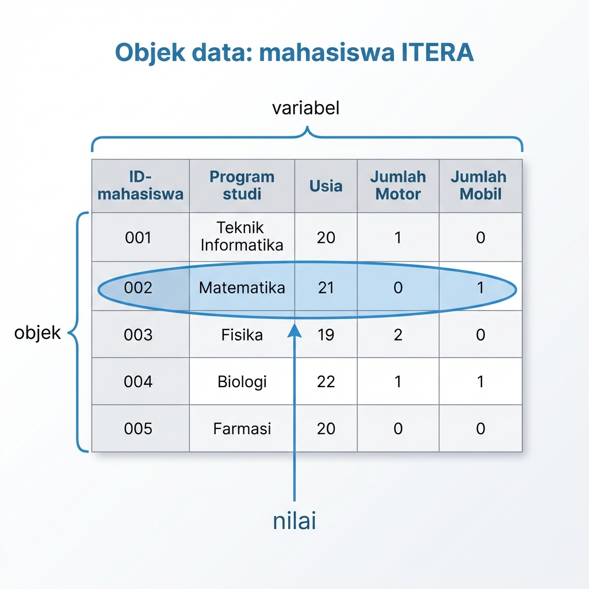
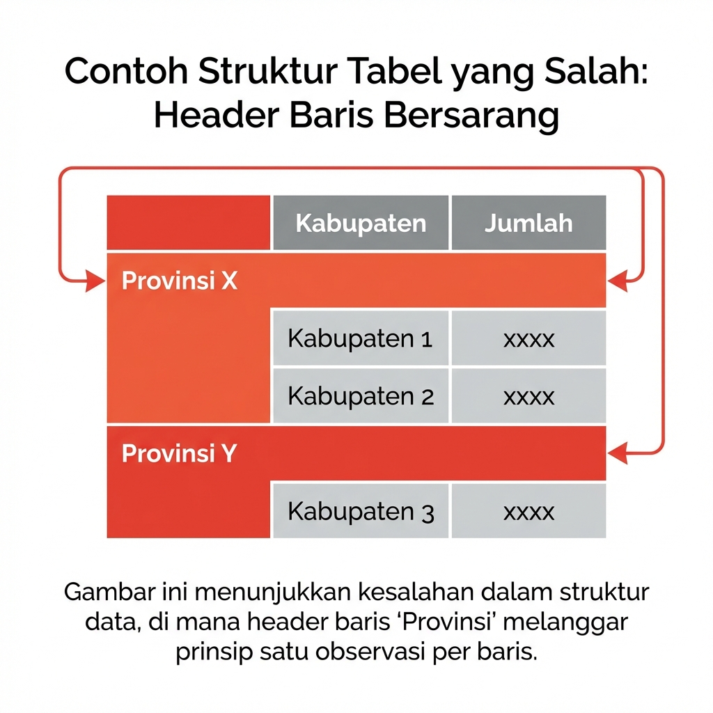
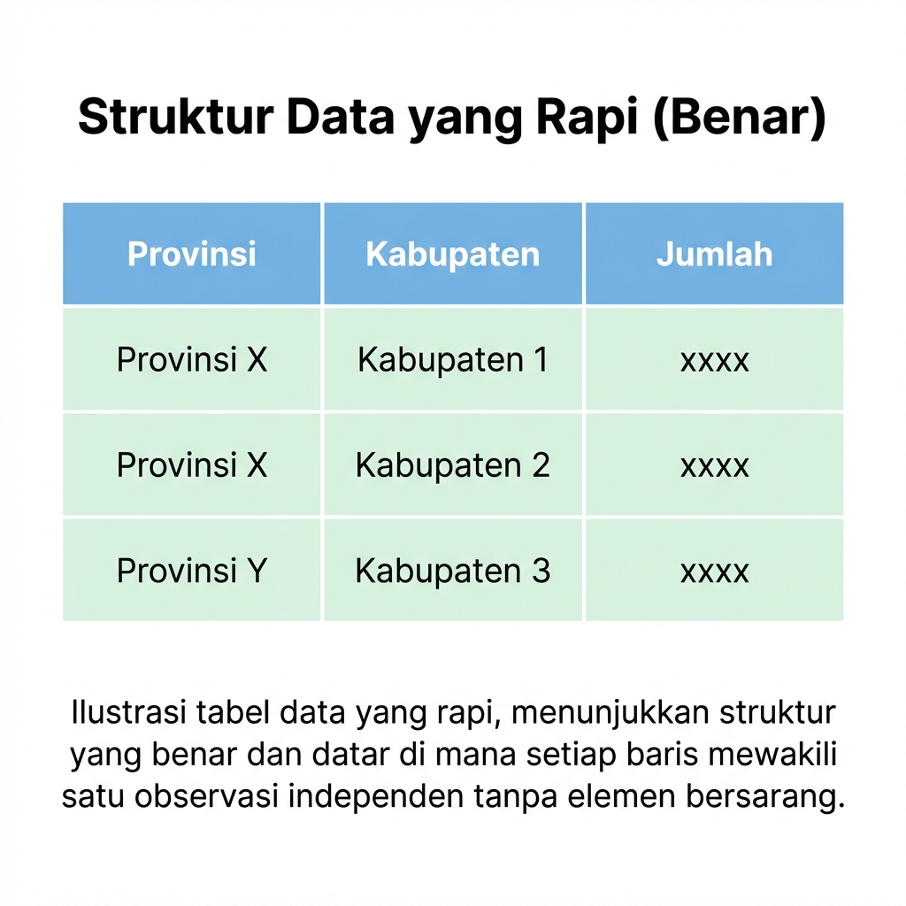
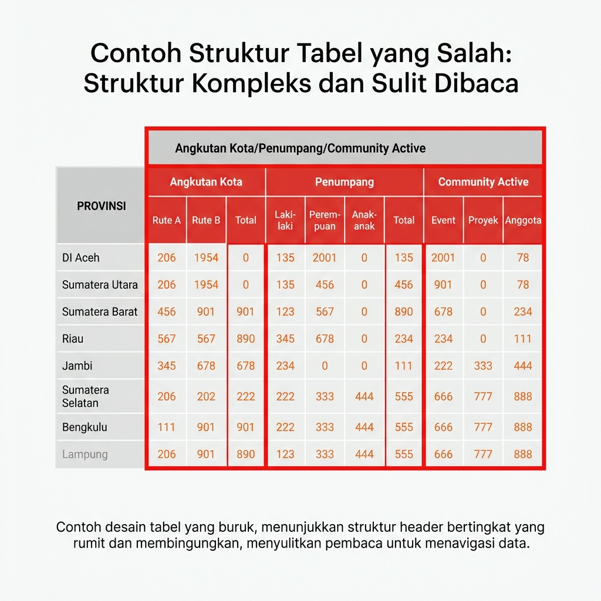
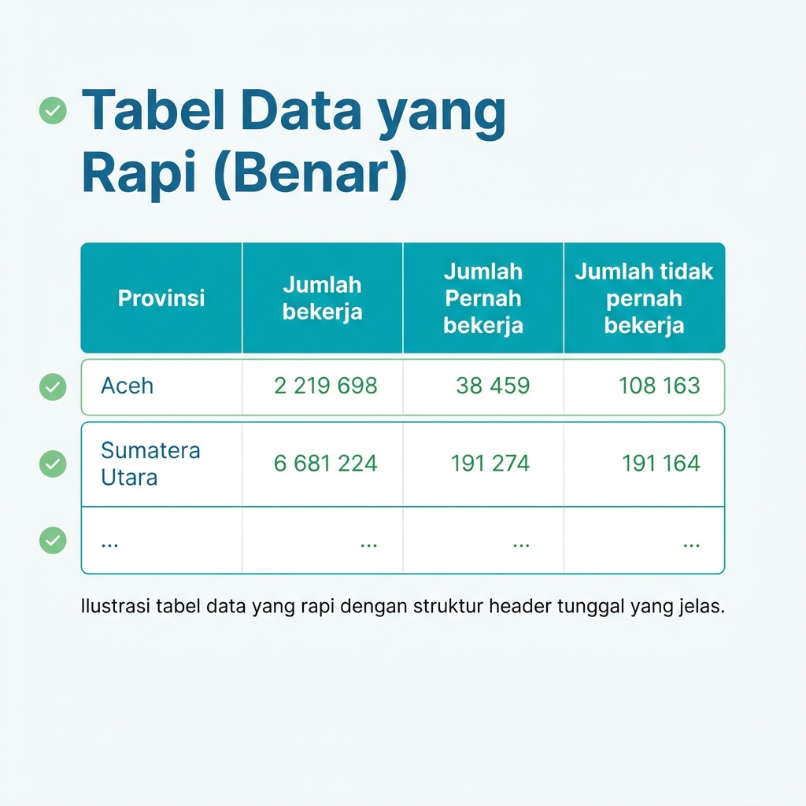
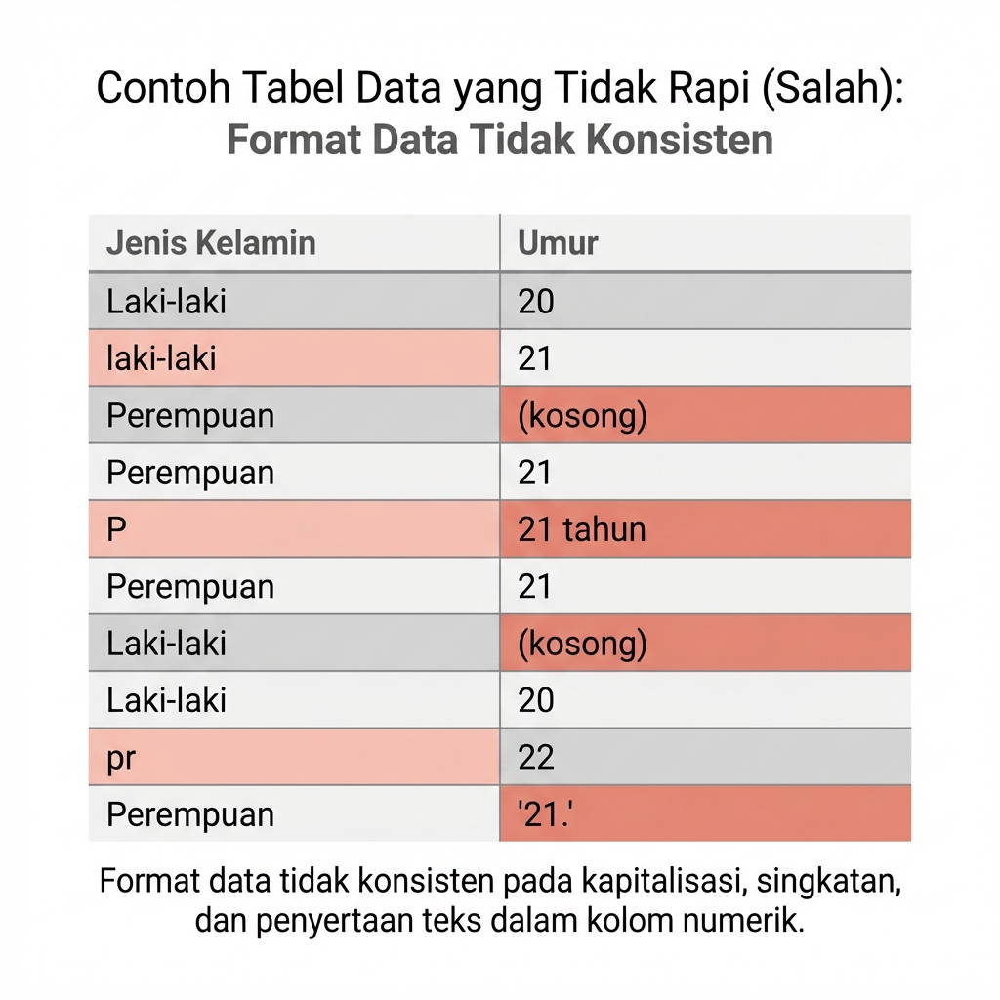
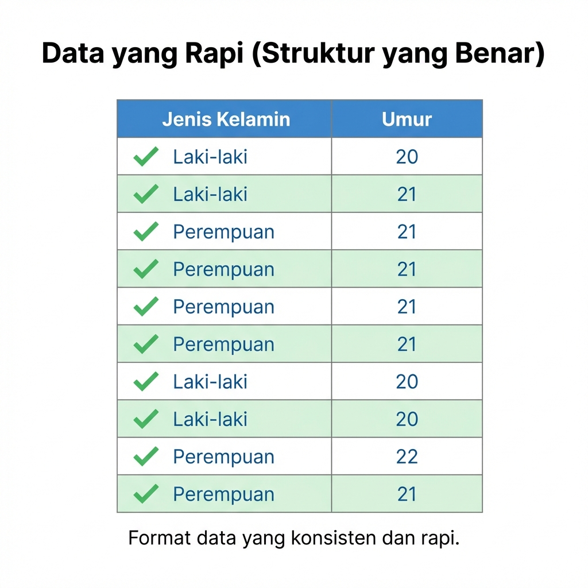

Bab 2 Data Terstruktur
Capaian Pembelajaran
Setelah mempelajari bab ini, Anda diharapkan:
- mampu menganalisis variabel dan objek dalam sebuah format data terstruktur sesuai dengan konsepnya STP-1.3
- mampu menentukan tingkat pengukuran yang tepat untuk sebuah variabel STP-2.1
Berdasarkan formatnya, data dapat dibedakan menjadi dua jenis. Jenis data berdasarkan formatnya tersebut terdiri atas data tidak terstruktur (unstructured data) dan data terstruktur (structured data).
Data tidak terstruktur adalah data yang tidak memiliki format yang terdefinisikan sebelum dikumpulkan, seperti teks wawancara, rekaman suara, gambar, atau video. Bentuk dan ukuran data-data tersebut dapat berbeda-beda, dengan kata lain formatnya tidak sama sehingga dapat dikatakan juga tidak terdefinisi atau tidak terstruktur (Oracle 2024).
Di sisi lain, data terstruktur adalah data yang memiliki definisi yang jelas dan pola yang telah ditentukan sebelum dikumpulkan. Definisi yang jelas di sini diperlihatkan dengan bentuk data terstruktur berupa tabel. Dengan bentuk tabel, data memiliki format yang terdefinisi, lebih jelas isinya, dan dapat dikenali polanya sehingga lebih mudah untuk dianalisis.
Penelitian yang menggunakan analisis statistik pasti menghasilkan data terstruktur dari pengumpulannya (de Vaus 2014). Hal ini bukan berarti penelitian kualitatif juga tidak bisa menghasilkan data terstruktur, akan tetapi hal tersebut tidak mutlak. Hanya penelitian kuantitatif dengan metode analisis statistik yang mutlak menggunakan data terstruktur.
2.1 Elemen Data Terstruktur
Dengan format yang jelas, data terstruktur dapat dipandang sebagai susunan 3 elemen penting: objek (object), variabel (variable), dan nilai (value). Ketiga hal ini membentuk struktur yang disebut tabulasi data. Tabulasi data adalah bentuk penyajian data dalam bentuk tabel yang terdiri atas baris dan kolom. Sebuah tabulasi data yang baik harus memiliki struktur yang jelas di mana baris mewakili objek dan kolom mewakili variabel.
- Objek. Objek adalah unit analisis yang datanya kita kumpulkan. Dalam tabulasi data, objek biasanya menempati posisi baris (row). Contoh objek dalam perencanaan wilayah dan kota bisa berupa rumah tangga, individu, kelurahan, kecamatan, atau kabupaten.
- Variabel. Variabel adalah karakteristik atau atribut yang melekat pada objek yang nilainya bisa berbeda-beda (bervariasi) antar satu objek dengan objek lainnya. Dalam tabulasi data, variabel menempati posisi kolom (column). Contoh variabel adalah luas lahan, jumlah penduduk, pendapatan per bulan, dan tingkat pendidikan.
- Nilai. Nilai adalah angka atau kategori yang mengisi perpotongan antara baris (objek) dan kolom (variabel), yakni sel (cell). Nilai ini merepresentasikan data spesifik dari variabel tertentu untuk objek tertentu.
Studi Kasus: Elemen Data Terstruktur
Perhatikan hasil pengumpulan data kuesioner berupa tabulasi data dari mahasiswa-mahasiswa ITERA seperti yang ditampilkan pada Gambar 2.1.

Gambar 2.1: Ilustrasi elemen data terstruktur
Kita akan membedah elemen-elemen data terstruktur dari tabulasi data tersebut:
- Objek dari tabulasi data tersebut adalah mahasiswa-mahasiswa ITERA. Tiap objek dibedakan berdasarkan variabel ID-mahasiswa.
- Variabel dari tabulasi data tersebut di antaranya adalah Program Studi, Usia, Jumlah Motor, dan Jumlah Mobil. Adapun variabel ID-mahasiswa tidak termasuk dalam variabel yang dihitung karena hanya bertindak sebagai pengidentifikasi objek.
- Nilai dari tabulasi data tersebut bisa kita lihat di sel-selnya. Misalnya, objek mahasiswa dengan ID-mahasiswa 002 memiliki nilai Program Studi adalah “Matematika”, Usia adalah 21 tahun, Jumlah Motor adalah 0, dan Jumlah Mobil adalah 1.
2.2 Tabulasi Data Terstruktur yang Baik
Agar data dapat diolah dengan baik menggunakan perangkat lunak statistik seperti R, tabulasi data harus memenuhi kaidah “Tidy Data” atau data yang rapi. Berikut adalah prinsip-prinsip data yang rapi:
- Setiap variabel harus membentuk satu kolom.
- Setiap observasi (objek) harus membentuk satu baris.
- Setiap jenis unit observasi membentuk satu tabel.
Pelajari kasus yang berisi perbandingan antara data yang tidak rapi dan data yang rapi berikut.
Studi Kasus: Perbandingan Data yang Tidak Rapi dan Data yang Rapi
Berikut adalah beberapa contoh kesalahan umum dalam struktur data dan perbaikannya:
| Jenis Kesalahan | Data Tidak Rapi (Salah) | Data Rapi (Benar) |
|---|---|---|
| Kesalahan 1: Header Baris Bersarang |
 |
 |
| Kesalahan 2: Struktur Kompleks |
 |
 |
| Kesalahan 3: Format Tidak Konsisten |
 |
 |
Jawablah soal evaluasi berikut untuk menguji pemahaman Anda tentang elemen-elemen data terstruktur.
Soal Evaluasi 2
Perhatikan tabel hasil pengumpulan data kuesioner berikut ini STP-1.3:
| ID_rumah | Usia_KK | Jml_anggota | Luas_rumah | Income_bln |
|---|---|---|---|---|
| 001 | 55 | 2 | 101 | 3,3 |
| 002 | 64 | 5 | 245 | 6,0 |
| 003 | 33 | 7 | 69 | 3,5 |
| 004 | 28 | 2 | 44 | 27,0 |
Jawablah pertanyaan-pertanyaan berikut berdasarkan tabel tersebut:
- Ada berapa objek dalam data terstruktur tersebut?
- Sebutkan apa kira-kira objek dari data terstruktur tersebut.
- Berapa variabel yang dapat dianalisis dari data terstruktur tersebut? Sebutkan apa saja.
- Apakah format tabel tersebut sesuai dengan prinsip data yang rapi? Jelaskan alasan Anda.
2.3 Tingkat Pengukuran Variabel
Pada subbab ini kita akan membahas lebih dalam tentang nilai dalam variabel yang berpengaruh pada analisis selanjutnya, yakni tingkat pengukuran variabel.
Sebagaimana telah disebutkan pada Subbab 1.2.1 bahwa pengumpulan data kuantitatif dapat disebut juga sebagai pengukuran suatu variabel, cara kita mengukur suatu variabel bisa diibaratkan seperti menggunakan mistar yang memiliki sederet angka (Kachigan 1986).
Tingkat pengukuran berbicara tentang cara kita menyatakan hasil pengukuran suatu variabel tersebut dalam angka, mulai dari hasil yang sangat menyerupai angka dalam mistar hingga hasil yang bukan angka sama sekali.
Studi Kasus: Tingkat Pengukuran Variabel
Sesuai dengan kasus 2.1, kita akan menggunakan kasus variabel Usia dari data terstruktur tersebut.
Dalam variabel tersebut, nilai Usia dapat kita nyatakan dalam 2 bentuk yang berbeda. Kita akan bedakan bentuknya menjadi kasus-kasus berikut:
Kasus-1: nilai
Usiadinyatakan dalam bentuk angka dalam satuan tahun. Dengan demikian, dalam kasus ini nilai17berarti “17 tahun”, dan nilai26berarti “26 tahun”, dan seterusnya.-
Kasus-2: nilai
Usiadinyatakan dalam bentuk rentang usia seperti berikut:- kategori 1: 17-25 tahun
- kategori 2: 26-35 tahun
- kategori 3: 36-45 tahun
- kategori 4: 46-55 tahun
- kategori 5: 56-65 tahun
Kita bisa menyatakan setiap kategori dengan angka tertentu yang masing-masingnya tentu mewakili rentang usia tersebut. Misalnya, kita bisa menyatakan kategori 1 dengan angka 17, kategori 2 dengan angka 26, dan seterusnya, sehingga rentangnya menjadi seperti ini:
- 17: 17-25 tahun
- 26: 26-35 tahun
- 36: 36-45 tahun
- 46: 46-55 tahun
- 56: 56-65 tahun
Dalam kasus ini, nilai
17bukan lagi berarti “17 tahun”, melainkan “17-25 tahun”. Artinya nilai17ini bisa saja bernilai17atau18atau19atau20atau21atau22atau23atau24atau25.
Kedua kasus tersebut menunjukkan bahwa kita bisa menggunakan tingkat pengukuran yang berbeda untuk variabel yang sama.
Kita akan mempelajari nama-nama tingkat pengukuran tersebut dalam subbab-subbab selanjutnya.
2.4 Jenis-jenis Tingkat Pengukuran Variabel
Tingkat pengukuran variabel secara umum memiliki 3 jenis dari yang paling rendah ke yang paling tinggi di antaranya adalah nominal, ordinal, dan metrik (metric). Kita akan bahas lebih dalam tentang jenis-jenis tersebut sebagai berikut mulai dari yang paling rendah ke yang paling tinggi.
2.4.1 Nominal
Tingkat pengukuran nominal adalah tingkat pengukuran yang paling rendah. Jika angka dikenakan pada variabel ini, angka tersebut hanya bertindak sebagai label.
2.4.2 Ordinal
Tingkat pengukuran ordinal berada di atas nominal. Angka pada tingkat ini hanya menunjukkan urutan atau posisi tetapi tidak dapat memberikan penafsiran berapa jarak di antara posisi-posisi tersebut.
2.4.3 Metrik (Angka)
Variabel dengan tingkat pengukuran angka (bahasa Inggris: metric) adalah variabel dengan angka yang sebenarnya karena angka pada tingkat pengukuran ini memiliki penafsiran angka yang sebenarnya, yaitu memiliki posisi dan skala nilainya.
Dalam literatur lain, seperti Tjokropandojo, Maryati, and Faoziyah (2021), tingkat pengukuran ini banyak dibagi menjadi dua tingkat lagi, yaitu interval dan rasio. Perbedaan antara keduanya adalah bahwa interval tidak memiliki posisi nol absolut seperti rasio.
Contoh yang paling mudah adalah suhu. Suhu dapat dinyatakan dalam skala Celsius dan Fahrenheit. Dalam skala Celsius, air membeku pada tingkat 0 derajat, tetapi dalam skala Fahrenheit air membeku pada tingkat 32 derajat. Ini menunjukkan posisi nol yang tidak absolut pada pengukuran suhu.
Contoh lainnya adalah tahun. Dalam penanggalan Masehi, tahun-0 ditempatkan pada masa kelahiran Isa Al-Masih. Sementara itu, dalam penanggalan Hijriah, tahun-0 ditempatkan masa hijrahnya Nabi Muhammad SAW. Masa kelahiran Isa Al-Masih tentunya terjadi lebih dulu dibandingkan masa hijrah Nabi Muhammad SAW. Ini juga menunjukkan posisi nol yang tidak absolut pada pengukuran tahun.
2.5 Menentukan Tingkat Pengukuran Variabel
Dalam praktiknya, menentukan tingkat pengukuran variabel seringkali tidak mudah karena seringkali data yang kita kumpulkan tidak memiliki tingkat pengukuran yang jelas. Oleh karena itu, kita perlu melakukan analisis lebih dalam untuk menentukan tingkat pengukuran variabel tersebut. Berikut adalah langkah-langkah yang dapat kita lakukan untuk menentukan tingkat pengukuran variabel.
- Tentukan apakah jenis nilai dari variabel: apakah kategorik atau numerik
- Jika kategorik, tentukan apakah terdapat tingkatan yang masuk akal. Jika terdapat tingkatan, maka ia pasti berupa ordinal. Jika tidak terdapat tingkatan, maka ia pasti berupa nominal.
- Jika numerik, pastikan apakah angka-angka merepresentasikan angka sebenarnya. Jika tidak, ia sebenarnya adalah kategorik. Kembali ke langkah 1.
- Jika numerik dan angka-angka merepresentasikan angka sebenarnya, pastikan apakah angka-angka memiliki posisi nol absolut. Jika tidak, ia pasti berupa interval. Jika ya, ia pasti berupa rasio.
Langkah-langkah tersebut dapat diilustrasikan dalam diagram alir yang ditampilkan dalam Gambar 2.2 berikut.

Gambar 2.2: Diagram alir menentukan tingkat pengukuran variabel
Studi Kasus: Menentukan Tingkat Pengukuran Variabel
Melanjutkan kasus pengumpulan data pergerakan mahasiswa ITERA dari bab sebelumnya, setelah merumuskan pertanyaan penelitian mengenai keberlanjutan pola pergerakan, kita perlu menentukan variabel yang akan diukur. Berikut adalah variabel-variabel tersebut beserta penjelasannya:
| Variabel | Nama Panggilan | Penjelasan |
|---|---|---|
| Moda transportasi yang digunakan responden |
kend
|
Nilai-nilai dari moda transportasi bukanlah angka, melainkan label yang merepresentasikan jenis moda transportasi yang digunakan responden. Oleh karena itu, jenis nilai dari variabel ini adalah kategorik. Tidak ada tingkatan pada nilai-nilai di variabel ini, sehingga tingkat pengukurannya adalah nominal. |
| Jarak tempuh dari rumah ke kampus |
jarak
|
Nilai-nilai dari jarak tempuh dari rumah ke kampus adalah angka yang merepresentasikan jarak tempuh dari rumah ke kampus. Oleh karena itu, jenis nilai dari variabel ini adalah numerik. Angka 0 merepresentasikan tidak ada jarak tempuh. Karena ini angka sebenarnya dan memiliki makna 0 yang sebenarnya, maka tingkat pengukurannya adalah rasio. |
| Banyaknya perjalanan ke kampus dalam satu pekan |
frek_jalan_sepekan
|
Nilai-nilai dari banyaknya perjalanan ke kampus dalam satu pekan adalah angka yang merepresentasikan banyaknya perjalanan ke kampus dalam satu pekan. Oleh karena itu, jenis nilai dari variabel ini adalah numerik. Angka 0 merepresentasikan banyaknya perjalanan ke kampus 0 kali, atau tidak pernah ke kampus. Karena ini angka sebenarnya dan memiliki makna 0 yang sebenarnya, maka tingkat pengukurannya adalah rasio. |
| Total biaya transportasi selama satu pekan |
biaya
|
Nilai-nilai dari total biaya transportasi selama satu pekan adalah angka yang merepresentasikan total biaya transportasi selama satu pekan. Oleh karena itu, jenis nilai dari variabel ini adalah numerik. Angka 0 merepresentasikan total biaya transportasi 0 rupiah, atau tidak mengeluarkan biaya transportasi. Karena ini angka sebenarnya dan memiliki makna 0 yang sebenarnya, maka tingkat pengukurannya adalah rasio. |
Setelah menelaah jenis nilai dan tingkat pengukuran variabel, kita perlu menspesifikasikan nilai isian beserta satuannya. Jika menggunakan kodifikasi, aturannya harus diperjelas. Spesifikasi ini disebut metadata, yaitu data yang menjelaskan tentang data.
| Variabel | Nama Panggilan | Tingkat Pengukuran | Satuan | Nilai yang mungkin |
|---|---|---|---|---|
| Moda transportasi yang digunakan responden |
kend
|
Nominal | Tidak ada | Sepeda motor, mobil, angkutan umum, dll |
| Jarak tempuh dari rumah ke kampus |
jarak
|
Metrik | km | 0 - ∞ km |
| Banyaknya perjalanan ke kampus dalam satu pekan |
frek_jalan_sepekan
|
Metrik | kali | 0 - 7 |
| Total biaya transportasi selama satu pekan |
biaya
|
Metrik | rupiah (Rp) | 0 - ∞ |
Mengubah Tingkat Pengukuran Variabel
Kita sudah menentukan nilai dari telaahan variabel-variabel yang sudah kita buat sebelumnya. Pada hasil telaahan kita sebelumnya, kita memiliki satu variabel nominal dan 3 variabel numerik. Variabel nominal tersebut adalah kend, sedangkan variabel numerik tersebut adalah jarak, frek_jalan_sepekan, dan biaya.
Kita bisa mengubah tingkat pengukuran variabel dari satu tingkat ke lainnya. Misalnya, kita bisa mengubah tingkat pengukuran variabel jarak dari metrik (rasio) menjadi ordinal. Karena tingkat pengukuran variabel metrik adalah angka, untuk mengubahnya menjadi ordinal maka kita perlu mengubahnya menjadi kategorikal. Artinya, kita perlu membuat kategori baru dari variabel jarak tersebut.
| Variabel | Nama Panggilan | Tingkat Pengukuran | Satuan | Nilai yang mungkin |
|---|---|---|---|---|
| Moda transportasi yang digunakan responden |
kend
|
Nominal | Tidak ada | Sepeda motor, mobil, angkutan umum, dll |
| Jarak tempuh dari rumah ke kampus |
jarak
|
Ordinal | km |
0 - 5 km, 5 - 10 km, 10 - 15 km, dll |
| Banyaknya perjalanan ke kampus dalam satu pekan |
frek_jalan_sepekan
|
Metrik | kali | 0 - 7 |
| Total biaya transportasi selama satu pekan |
biaya
|
Metrik | rupiah (Rp) | 0 - ∞ |
Jawablah soal evaluasi berikut untuk menguji pemahaman Anda tentang tingkat pengukuran variabel.
Soal Evaluasi 3
Perhatikan cuplikan data hasil survei mahasiswa berikut ini:
| KodeResp | Usia | Fakultas | ThnMsk | UangSaku | Jarak |
|---|---|---|---|---|---|
| 001 | 22 | 1 | 2020 | 2 | 19,27 |
| 002 | 25 | 1 | 2020 | 1 | 0,58 |
| 003 | 24 | 2 | 2021 | 1 | 0,56 |
| 004 | 19 | 3 | 2022 | 1 | 1,05 |
| 005 | 23 | 2 | 2021 | 1 | 1,69 |
| 006 | 20 | 1 | 2020 | 3 | 1,37 |
Adapun keterangan dari variabel-variabel tersebut (metadata) adalah sebagai berikut:
| Nama Variabel | Deskripsi | Nilai-nilai yang valid |
|---|---|---|
KodeResp
|
Nomor urut responden | tiga digit angka, hingga jumlah responden minimal |
Usia
|
Usia responden (tahun) | 18 - ∞ |
Fakultas
|
Fakultas mahasiswa |
1 = Fakultas Syariah, 2 = Fakultas Tarbiyah dan Keguruan, 3 = Fakultas Dakwah dan Komunikasi |
ThnMsk
|
Tahun masuk kuliah (Masehi) | 2018 - 2022 |
UangSaku
|
Uang saku mahasiswa per bulan |
1 = <1 juta rupiah, 2 = 1-2 juta rupiah, 3 = 2-3 juta rupiah, 4 = 3-4 juta, 5 = >4 juta |
Jarak
|
Jarak tempat tinggal mahasiswa dari kampus (km) | 0 - ∞ |
Sebutkan tingkat pengukuran untuk variabel-variabel yang ada dalam set data tersebut dan jelaskan! STP-2.1